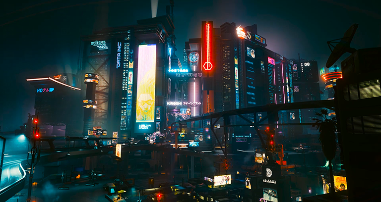
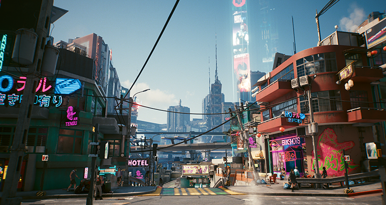
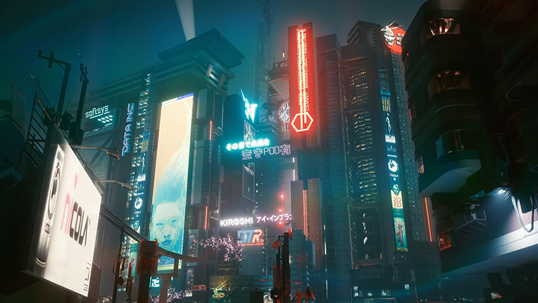
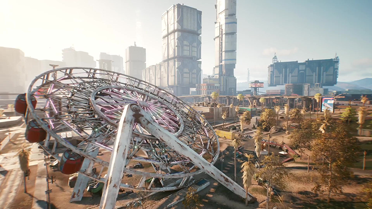

夜之城的缘起： “我目睹过公司夺走农民的水源·······最后是土地。还目睹过夜之城变成一台机器，用人们崩溃的精神，破碎的梦想以及民脂民膏来作燃料。长久以来公司控制着民生，拿走了一切······而现在，他们连灵魂都不放过。” ——强尼·银手  夜之城是商人理查德·奈特(Richard Night)的心血之作，由于对自己在管理联合建筑方案时经历的种种不满，理查德·奈特离开了自己的老公司Halsey,Ferris&Night，并成立了自己的新公司奈特国际，目标正是建设一座理想中的城市。在科罗纳多城建设得如火如荼之时，奈特国际聘用了一大批风格前卫的建筑师和先进技术人员。然而，尽管有着自身的影响力和盟友的千番保护，奈特的好运终究还是到头了。1998年9月20日，奈特被发现死于新建成的园景酒店顶层的套房内。警方在他的尸体上发现了枪伤，一击毙命。杀人凶手至今未被找到。 Richard Night于1998年去世后，该城市为纪念他更名为夜之城，之后由几个不同的团体争夺控制权。 当地暴徒帮与公司发生冲突，导致大部分行为处于无政府状态，警察部队也无法对这暴徒帮采取有效措施。 到2005年，暴徒帮控制了城市的基础设施，而那些不想治理的公司则退回到公司的据点和郊区。 2009-2011年期间被称为暴徒战争。 夜城变得非常暴力，谋杀和帮派活动处于历史最高点。 目前还不清楚这些公司是否试图与暴徒打交道，但众所周知，暴徒帮对于大型企业来说不是什么好事儿。 最终暴徒战争以荒坂（持有重型装甲的日本安保公司）的武力结束了战争。  在2013年，财团毫不留情地打击城市内各种乱象，一扫而净。治安，消防和急救等基础服务部门也得到了重建，哪怕公司老板再怎么仗势欺人，对普通市民来说，总比去路边报亭买个东西都要躲着子弹的日子要好得多。也正是在这一时期摇滚小子中的传奇人物强尼·银手，在原荒坂大厦门外举办了一场演唱会，并联合著名雇佣兵——“摩根·黑手”使用原子弹发动了对大厦的进攻。荒坂大厦损毁严重，数年后才完全修复。 夜之城地区大约有200万因核爆，地陷和洪水而无家可归的难民，幸存者逃进了拥挤不堪的棚户区，这些棚户区位于周边郊区的北橡区、威斯特布鲁克、太平洲、海伍德和夜之城南部。公司中心区的大部分区域已被摧毁。残骸过于巨大，以至于无法挖出来运到远处的垃圾填埋场，因此幸存者们使用推土机和临时改装的主战坦克（双方在战场上抛弃了大量坦克）将残骸推入海湾。在双子塔倒塌之前，夜之城的大部分街区就已经在日复一日的战斗中被夷为平地。而新的摩天大楼正是从这些废墟中拔地而起，准备好再次拨云见日。 这个正在进行的重建进程也巩固了夜城与外部世界的关系。被克雷斯总统和“新”美国抛弃后，夜之城绝无重返失败的美国政府怀抱的想法。如果克雷斯的继任者们想要夺回这个特别的自由贸易区，他们必然要经历一场漫长的恶战;市政府甚至准备向荒坂公司（当时该公司正试图改善与美国方面的关系）求援。至于欧洲方面：夜之城市议会认为他们是很好的贸易伙伴，只要他们不破坏城市的和谐。考虑到战争期间发生的一切及其后续结果，夜之城选择与荒坂公司共同进退，而不是军队和“新”美国。  2069年，美国新总统罗莎琳德·迈尔斯制定了一项联邦法规，旨在以加强国家的名义将各自由州联邦化，从而迫使它们服从国家管理，新美国和夜之城之间的战争一触即发，就在联邦军队已经开抵城市近郊之际，当时的市议员卢修斯·莱恩利用他十余年来积攒的人脉，恳求长期回避的荒坂公司提供保护。在议员发出求援的几天，荒坂重工一艘超级航母出现在科罗纳多湾，几小时后NUSA撤退了。签署统一条约的原因之一是迈尔斯总统担心荒坂公司的进场会使战争升级。尽管双方对条约内容都不满意，但总要好过冒着另一场全球危机的风险继续开战。 条约将夜之城重新定位为一个国际性的，独立的城邦，不受北加州或NUSA的管辖。然而，新的自由也允许了进一步增加巨头企业的条款。荒坂公司获准在市中心建立他们新的驻美总部，他们的旧总部在2023年被摧毁。繁荣的气息再次浮现于这座城市，但并非所有人都享受到了这种繁荣。 （夜之城）  |
| 返回主页 |